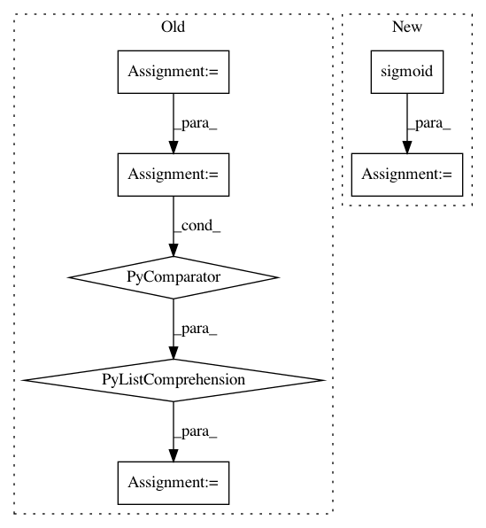

6bf3f51cd0a312da842157665663c2dad9983248,tensorflow_ranking/python/losses_impl.py,ClickEMLoss,_compute_latent_prob,#ClickEMLoss#Any#Any#Any#,914
Before Change
rel_prob = tf.math.sigmoid(tf.cast(rel_logits, tf.float32))
is_clicked = tf.greater_equal(tf.cast(clicks, tf.float32), 1.0)
prob_non_clicks = 1 - exam_prob * rel_prob + 1e-6
exam_prob_given_non_clicks = exam_prob * (1 - rel_prob) / prob_non_clicks
rel_prob_given_non_clicks = (1 - exam_prob) * rel_prob / prob_non_clicks
exam_prob_given_non_clicks, rel_prob_given_non_clicks = [
tf.stop_gradient(
tf.compat.v1.where(is_clicked, tf.ones_like(prob), prob))
for prob in [exam_prob_given_non_clicks, rel_prob_given_non_clicks]
]
return exam_prob_given_non_clicks, rel_prob_given_non_clicks
def compute_unreduced_loss(self, labels, logits):
Computes the loss for each element.
After Change
exam_prob_posterior = tf.compat.v1.where(
is_clicked, tf.ones_like(exam_logits_posterior),
tf.sigmoid(exam_logits_posterior))
rel_prob_posterior = tf.compat.v1.where(
is_clicked, tf.ones_like(rel_logits_posterior),
tf.sigmoid(rel_logits_posterior))
return tf.stop_gradient(exam_prob_posterior), tf.stop_gradient(
rel_prob_posterior)
def compute_unreduced_loss(self, labels, logits):
In pattern: SUPERPATTERN
Frequency: 3
Non-data size: 7
Instances
Project Name: tensorflow/ranking
Commit Name: 6bf3f51cd0a312da842157665663c2dad9983248
Time: 2021-01-29
Author: xuanhui@google.com
File Name: tensorflow_ranking/python/losses_impl.py
Class Name: ClickEMLoss
Method Name: _compute_latent_prob
Project Name: rusty1s/pytorch_geometric
Commit Name: f6532b3c4c329e6d5d5fb846acc441df47616c4c
Time: 2020-03-22
Author: matthias.fey@tu-dortmund.de
File Name: torch_geometric/nn/models/gnn_explainer.py
Class Name: GNNExplainer
Method Name: explain_node
Project Name: IndicoDataSolutions/finetune
Commit Name: 04573605a3bef45d29d81302bce154f220bbd7f5
Time: 2019-01-15
Author: matthew.bayer@indico.io
File Name: finetune/network_modules.py
Class Name:
Method Name: ordinal_regressor